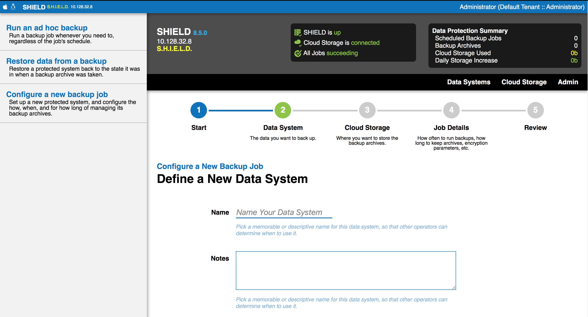
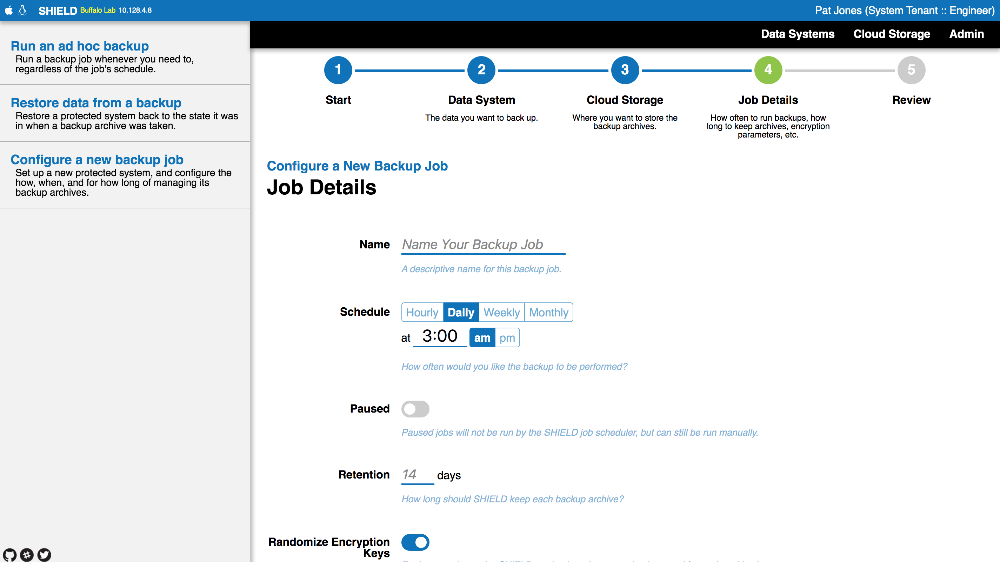
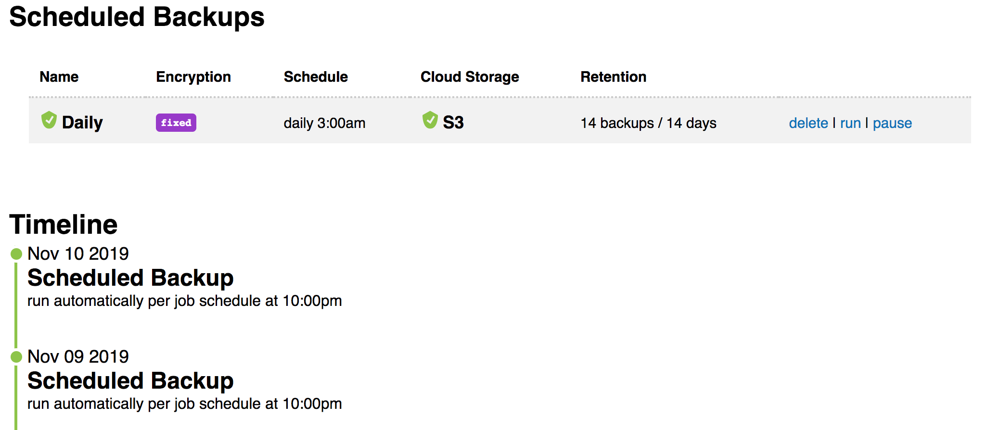
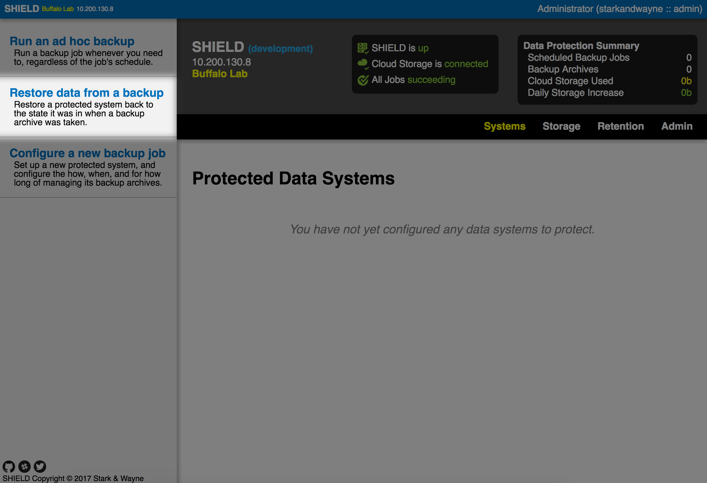
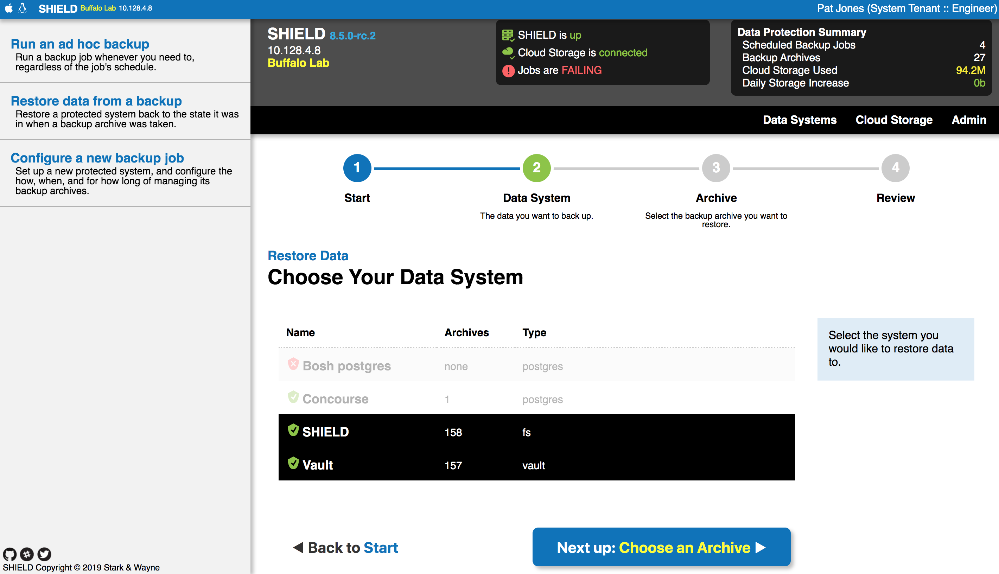
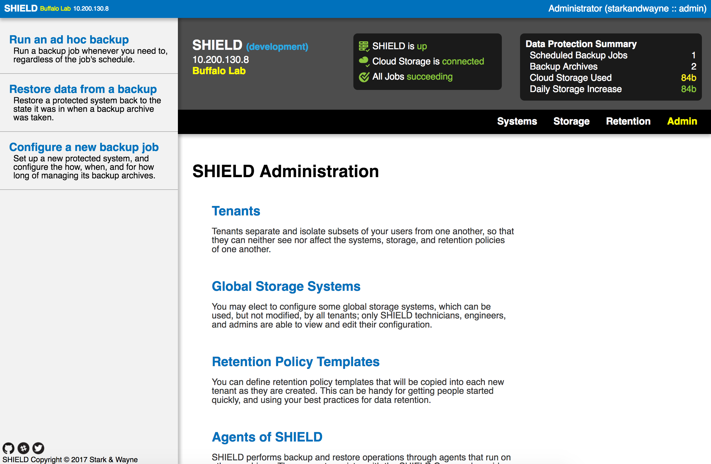
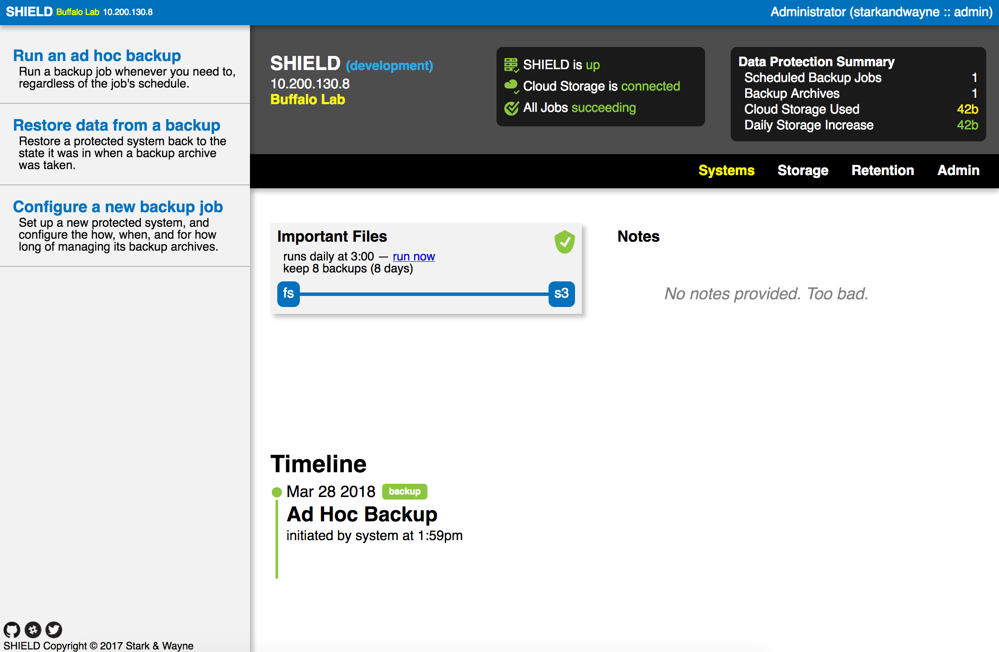
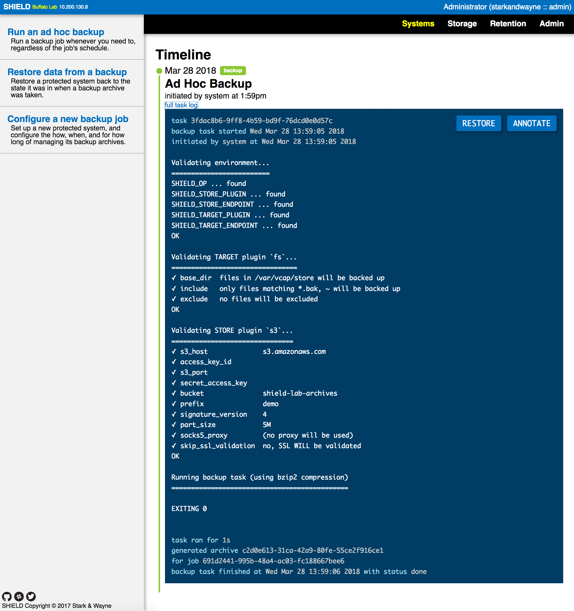
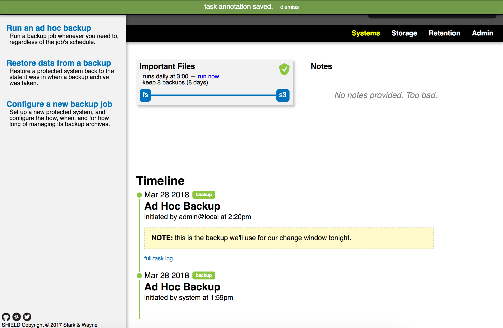

Shield is a data protection system that performs unattended and automatic backup tasks, according to a schedule you define.
Install the SHIELD CLI
The SHIELD project makes pre-compiled binaries available for
download on its Github releases page. Download the
correct binary for your platform, make it executable, and put it
somewhere in your $PATH.
Authenticate to SHIELD
To talk to SHIELD, you first have to target a SHIELD Core. The SHIELD Core is the brains of a SHIELD installation; it handles the scheduling and configuration of jobs, the execution of backup and restore tasks, authentication, etc.
To target a SHIELD Core, use shield api:
$ shield api https://10.200.130.8 my-shield
my-shield (https://10.200.130.8) OK
SHIELD Buffalo Lab
(You can specify the alias and the URL in either order).
Once you’ve set up the target, you can activate it by passing the
-c option to all of your SHIELD commands, i.e.:
$ shield -c my-shield jobs
Or, you can set the $SHIELD_CORE environment variable:
$ export SHIELD_CORE=my-shield
$ shield jobs
Finally, in order to use the SHIELD Core, you’ll need to authenticate with credentials:
$ shield -c my-shield login
SHIELD Username: admin
SHIELD Password:
logged in successfully
The default credentials for SHIELD are admin (username) and
shield (password). You should change these as soon as you can.
To check the status of SHIELD:
$ shield -c my-shield status
SHIELD Buffalo Lab v8.0.8
API Version 2
---[ MOTD ]-------------------------------------
Welcome to SHIELD!
------------------------------------------------
To log in via the web interface, just open the SHIELD Core URL in your browser of choice, and enter your credentials:

List Targeted SHIELD Cores
You can see what cores you have targeted using:
$ shield cores
Name URL Verify TLS?
==== === ===========
my-shield https://10.200.130.8 yes
Each core will be listed, alongside the SHIELD URL (whatever was
given to shield api) and whether or not the shield CLI will
verify the TLS certificates that the SHIELD Core presents.
Initialize a SHIELD
When SHIELD is first deployed, it has a blank Vault, and cannot do much of anything. An operator must first initialize the SHIELD, selecting a master password in the process.
This master password will be used to encrypt the Vault credentials. SHIELD does not keep any record of this password. You must save this password in an external location, and keep it safe.
You can initialize a new SHIELD from the command-line via shield init:
$ shield api https://10.200.130.8 my-shield
$ shield -c my-shield init
New SHIELD Core master password:
Confirm new master password:
SHIELD core unlocked successfully.
BELOW IS YOUR FIXED KEY FOR RECOVERING FIXED-KEY BACKUPS.
SAVE THIS IN A SECURE LOCATION.
----------------------------------------------------------------
02F63642CF3283CE826776A181D4DE6C18D9CD6ACF1C85052B0363FD93E85C67
F46971070951681DE62D1F9E240D247E254BC1787A4DE347B23416F6AEA39EEB
15CF4C3FDBEB2D7CEE54CA7D79789752B3458D0C4EBD3AF1B888605A52739002
E7D8B1B428FAD663EB74B385842C3A97122F979738281849C73A2E2DA39F2524
3C4F8AC2F8AFB04FC7F1E4CFD01CDFC607DB18529F5592AE5DEB6352F3B2EB14
9C4A2248FB2534DBB58DB7CC498282AD57766A0EF90302457352E35B2B38BD8F
C2CCAE48296508FA4DBFEBDFBD18A5C0389689F12650D17358B0BC4235A023F4
68C38A658AEC6C19C7AD58DFB6A62B68FD218D98B34C679129459DA51B9D8BC4
----------------------------------------------------------------
This fixed key is necessary for backing up SHIELD itself. Store it somewhere safe, probably next to your master password.
If you prefer the web interface, all you need to do is log in. Your first time logging into SHIELD will walk you through the process of initializing the core.

Enter your new master password, twice, and SHIELD will go configure itself and unlock. As with the CLI method, you will be presented with a fixed key that will be used for specific backups (i.e. SHIELD itself). You’ll want to store that somewhere safe and secure, outside the scope of the systems you are backing up (don’t put it in Vault!)

My SHIELD is Locked!
When SHIELD reboots, its internal Vault also reboots, and comes up sealed. When this happens, SHIELD reports itself as “locked”. While locked, SHIELD will allow non-system users to login and manage their jobs, pause and unpause them, change schedules, etc. It will not run backup tasks, because it has no Vault to generate encryption keys.
In contrast, system-level operators logging into the web interface will be unable to do anything until they provide the master password to unlock.

This can also be accomplished from the command-line:
$ shield unlock
SHIELD Core master password:
SHIELD core unlocked successfully.
Change the SHIELD Master Password
If you believe your SHIELD master password has been compromised, you can rekey the SHIELD Core to set a new one. This will not adversely affect previously taken backup archives; they will continue to function, and can be restored at any time.
To rekey SHIELD via the command-line:
$ shield rekey
Current master password:
New SHIELD Core master password:
Confirm new master password:
SHIELD core rekeyed successfully.
This can also be accomplished in the web UI under rekey SHIELD core in the admin panel
The new master password will be required the next time SHIELD is rebooted.
What is a “tenant” / Why do I need one?
SHIELD has a robust access control system that allows several teams to co-exist peacefully in one installation, without stepping on each other’s toes. This is referred to as multi-tenancy.
Several of the “objects” that SHIELD manages, like job definitions and target data system configurations, belong to a single tenant.
You can list the tenants you have access to on the command-line:
$ shield tenants
UUID Name
==== ====
6f7643e2-77fd-448a-bb44-fb53d757a62d tenant1
f3072633-4944-4423-b8b7-7e0be968521c starkandwayne
1ab18dc3-714f-402e-9be0-d5343be5bed7 CF Community
To specify a specific tenant, i.e. to look for their jobs or
targets, you have to give the shield utility the -t or
--tenant option. You can specify tenants either by name (easier)
or UUID (more accurate). You can also set the $SHIELD_TENANT
environment variable.
In the web interface, you always operate inside of the context of a single tenant, which you can change via the account menu in the top right-hand corner:

Configure a new Backup Job
To set up a new backup job, you need to know four things:
- What to backup (the target)
- When to backup (the schedule)
- Where to store the backup archives (the store)
- How long to keep the archives (the retention policy)
The SHIELD web user interface provides a guided wizard for configuring a new backup job, which can be accessed from the sidebar:

This is a three-stage wizard. First, you’ll configure your target data system, the thing you want to back up.

The Name is important; it’s how you and other operators will refer to the system, and how SHIELD will display the system on the Systems page. Make it memorable, and unique.
Notes are optional but highly encouraged.
The Agent dropdown lists all the registered SHIELD Agents that you can ask to perform the backup and restore tasks. Usually, this is the agent co-located on the data system, but it could be an “external” agent if your backup plugin uses the network to facilitate data exchange.
Once you select an agent, you’ll need to select the plugin to use for extracting data from the system, and then configure that plugin:

Next, select where to keep the backup archives, or configure a new storage system:

Next, you’ll configure the schedule for your new backup job as well the retention of the archives created by this job:

Finally, review your new job details and click the save button.

Execute a Backup Job Manually
SHIELD let’s you kick off ad hoc backup job runs, either via the command-line, or the web interface. In either case, the scheduled runs of the backup job are unperturbed.
From the web interface, you can click the run link from the job’s details under the target view:

From the command-line, first get a list of jobs:
$ shield jobs
UUID Name Summary Schedule Status Policy SHIELD Agent Target Store Fixed-Key
==== ==== ======= ======== ====== ====== ============ ====== ===== =========
691d2441-995b-48a4-ac03-fc188667bee6 Daily daily at 3:00 Short-Term 10.200.130.8:5444 Important Files Some Cloud false
(Remember to set your tenant via -t ... or SHIELD_TENANT=...)
Then, trigger an ad hoc backup run:
$ shield run-job 691d2441-995b-48a4-ac03-fc188667bee6
Run job Daily in tenant starkandwayne? [y/N] y
Scheduled ad hoc backup job run
Restore a Backup Archive
The SHIELD web interface has a guided wizard that takes you through the steps of restoring a backup archive to a data system. You can find it linked from the sidebar:

This wizard will ask a few questions, to help you find the right system to restore, and the correct archive to pull back and replay. First, what do you need to restore?

Next, SHIELD will show you all of the archives that have been made from this target system, and gives a lot more prominence and visual weight to the most recent one.

Finally, you get to a review screen, to make sure you are certain that you want to perform this operation. Remember: data restoration can be a disruptive process.
You can also do this via the command-line. First get a list of protected data systems:
$ shield targets
UUID Name Plugin SHIELD Agent Configuration
==== ==== ====== ============ =============
4a642c3c-1f45-4c62-af03-f9120db4ed58 Important Files fs 10.200.130.8:5444 {
"base_dir": "/var/vcap/store",
"include": "*.bak, ~"
}
(Remember to set your tenant via -t ... or SHIELD_TENANT=...)
Then, get the list of backup archives that exist for that target:
$ shield archives --target 'Important Files'
UUID Key Status
==== === ======
c2d0e613-31ca-42a9-80fe-55ce2f916ce1 demo/2018/03/28/2018-03-28-175905-0252eddd-977c-4aed-b2ec-3ad651807cd9 valid
Finally, do a SHIELD restore (using your archive UUID):
$ shield restore-archive c2d0e613-31ca-42a9-80fe-55ce2f916ce1
Set up new Cloud Storage
SHIELD uses Cloud Storage systems to store backups off-site. You can configure a wide variety of backend systems, including Amazon S3, Scality, WebDAV, Google Cloud Storage, Azure Blobstore, and many more.
From the web interface, click on the Configure a New Cloud Storage System link on the Storage page:

You’ll need to name your cloud storage, and can optional provide a more detailed description that will be shown to SHIELD users. The threshold is used for triggering alerts in the web interface header panel, when too much of the storage budget has been used.
The agent you select determines which storage plugins you can use, and how to configure them.

How Can I Share Storage Configuration Across Tenants?
Cloud Storage systems are normally private to a tenant. If you are site-level SHIELD administrator / operator, you can create Global Cloud Storage systems that will be made available to all tenants. Most users will not be able to view the configuration of this global storage, but will be able to configure their backup jobs to use it.
You can create a global cloud storage system from the SHIELD Admin Backend:

View Backup Tasks
To view tasks for a single data system, access the timeline view for that system by clicking on its card on the Systems page.

The timeline lists each task, in reverse chronological order, so the most recently executed tasks float to the top. Clicking on the task will expand its task log:

This contains all of the relevant details about this task; when it was scheduled, when it started, when it stopped, whether it succeeded or not, etc. It also contains a full log of what was done.
Annotate a Backup Task
Sometimes, backups fail for reasons outside of your control. Sometimes you figure out why a string of failures occurred, and want to make notes. SHIELD lets you do that via task annotations.
You can annotate a task for any reason. Start by accessing the timeline view for the system, and expand the task you want to annotate. Then, click the Annotate button in the top right-hand corner:

This brings up the annotation form:

Fill in your notes, and then click Save. Your new annotation will feature prominently in the task header, without requiring anyone to expand the full task log:

What Agent Should I Use?
In general, if you co-locate an agent on the target data system that you want to back up, that’s the agent you should use. These will often be named after the BOSH deployment / instance_group that they are deployed to, to make things easier.
If you are unable to co-locate an agent, you can use remote agents, or
external agents, which run elsewhere, and use the network to perform
target-specific backup and recovery operations. The data system has to
support this, as does the configuration of the data system. For example,
PostgreSQL can handle a pgdump backup across the network, if you configure
the user permissions properly. Redis, on the other hand, cannot do
network-based backup or restore.
My SHIELD Agent Is Missing!
If you expect to see an agent in a dropdown in the web interface, but do not, there’s a few things you should check:
- Does the agent show up in the admin backend?
- Is the agent software running?
- Can SHIELD and the agent see each other on the network?
The SHIELD Admin Backend provides a view into the list of registered agents and their health:

If your agent is listed here, that means it is registering itself with the SHIELD core properly. If it is marked as unhealthy, investigate and resolve that problem before returning to diagnostics with the SHIELD core.
If the agent is not listed, double-check that:
- the
shield-agentprocess on the remote host is running - the agent is configured to talk to the right SHIELD core
- the agent whitelists the SHIELD core’s public key
Finally, check your network topology. SHIELD currently requires that it have direct, mutual visibility with its agents. The registration protocol currently involves an HTTPS call into the core from the SHIELD agent. The core then uses the remote address that made said HTTPS call to connect back to the SHIELD agent to finish registration and interrogation.
This means that things like HTTPS proxies and NAT gateways can cause havoc with SHIELD agent registration.